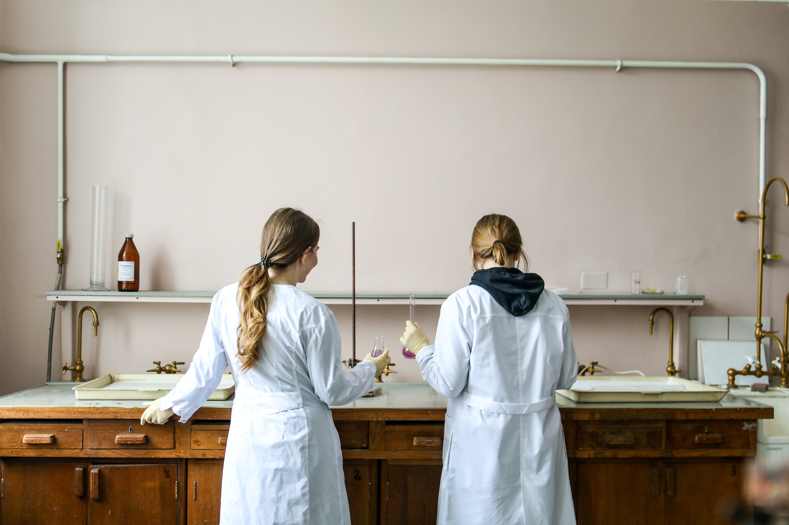

IMPORTANCE OF WOMEN EMPOWERMENT
By Anna Sikora
HOME
READ
How women rights are violated in the world?
Women who changed the world: female in technology and science
How to support women?
Women Empowerment Principles
ABOUT
How to support women?
Referring to the World Vision, These are 7 ways to empower women and girls around the world in simple way:
1. Provide the ticket to a better life: clean water
That is mean that, women and girls around the world spend 200 million hours a day getting water, which is often dirty and unsafe for their health, rather than going to classes and getting education.
2. Support girls and women in crisis
Millions of girls are victims of exploitation, child labor, human traffic, child marriage and other crimes. Our little gesture and assistance can equip qualified local staff for further training, education, counseling, medical care, small business loans and other programs needed to protect girls and women in different countries.
3. Mentor a girl close to home
There are many local volunteering groups, which can help to guide as a tutor or mentor and help many young girls who's growing up and which are held back by poverty, poor-performing schools, and teen violence.
4. Invest in a small business owner
Through the plan of World Vision microloans, you can connect with hardworking females entrepreneurs, who are waiting to realize their dream of building or expanding a successful business. This program allows to spread and expand small businesses faster.
5. Use your voice to help keep girls in school
There is a support for the Keeping Girls in School Act, Which can help more girls around the world to stay in school and obtain a high-quality education. There are still huge number of girls in ages 6 to 17 are out of school.
6. Help a new mom
We can help save young lives around the world by giving a new mother the essential things like a baby bed, cloth diapers, blankets, a container for clean water, and soap. These few basic items can save many new born babies around the world.
7. Tell the women in your life that you care
Today in very simple way we all can empower our women that we know by simple gesture, like writing a note of thanks to that person who encouraged us years ago or to our moms or sisters who’s struggling to balance it all, or telling how much you appreciate them.
To find out more about women support visit:
World Vision
Women Empowerment Principles
There are many organization who Support the principles of women's empowerment. These principles are the result of a collaboration between the UN Global Compact and UN Women and have been adapted from Calvert Women's Principles.
READ

Women who changed the world: Women in technology and science
There are many women in this world that changed the whole view and perspective of the female gender by doing many wonderful things.
READ
How women rights are violated in the world?
Referring to the ‘Amnesty International’ Women’s rights are human rights, which are all entitled to the same rights of humans.
READ